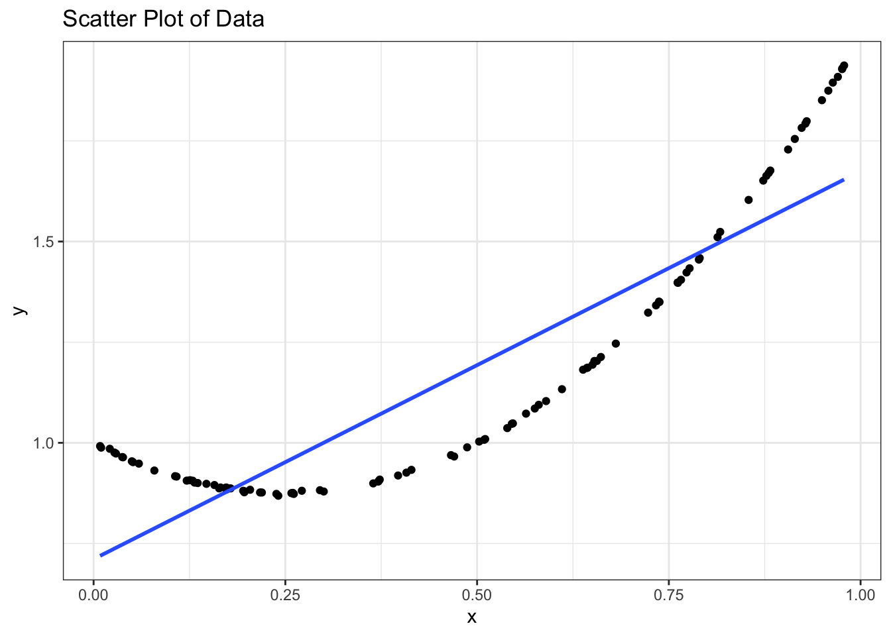
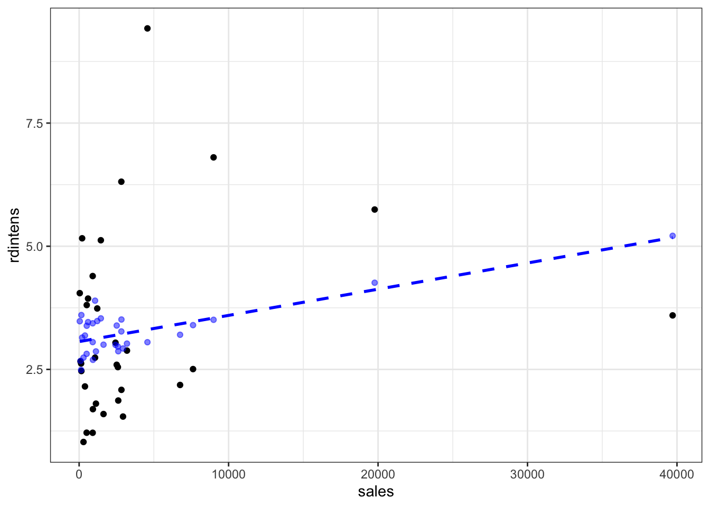

library(wooldridge)
library(tidyverse)
library(stargazer)
library(lmtest)
library(car)
library(sandwich)
hprice1_data <- hprice1assignment8
Today’s exercises are based mainly on Chapter 9 in Wooldridge (2018). Some questions from previous chapters may also be included. In addition, the questions you may not have solved last week should be considered prerequisites to this exercise set. Feel free to post questions either by mail or the discussion forum here. I will monitor both during the day and will be available for questions.
Important
Please remember that there is likely a large overlap between the contents of the readings, the smaller lectures and plenary sessions, and the videos I’ve provided. I do not expect you to spend time on all these different elements, but I expect you to choose whichever you learn the most from. In the end, the exercises are the ones that closest resemble what you can expect from the exam.
Unless stated otherwise, the primary source of data we will be using is from the wooldridge package. Remember, you can access them directly in R with the following code:
Problem 8.1: Simulation Example
First, we want to generate an artificial data set with 100 observations where: \[\begin{align*}
x&\in[0,1] \\
u&\sim \mathcal{N}(0, 0.0025) \\
y &= 1 - x+2x^2 + u
\end{align*}\] Using R, we can generate this artificial data set with the following snippet of code:
nObs = 100
x = runif(nObs)
u = rnorm(nObs, sd = 0.0025)
y = 1 - x + 2 * x^2 + u- Estimate the linear model: \[\begin{align*} y = \alpha_0 + \alpha_1 x + v, \end{align*}\] where \(v\) is just some new error term with a zero conditional expectation.
artif_data = data.frame("x" = x, "u" = u, "y_true" = y)
est_model <- lm(data = artif_data,
formula = y ~ x)
stargazer(est_model, type = "text")
===============================================
Dependent variable:
---------------------------
y
-----------------------------------------------
x 0.993***
(0.053)
Constant 0.664***
(0.030)
-----------------------------------------------
Observations 100
R2 0.781
Adjusted R2 0.779
Residual Std. Error 0.151 (df = 98)
F Statistic 349.464*** (df = 1; 98)
===============================================
Note: *p<0.1; **p<0.05; ***p<0.01artif_data <- artif_data |>
mutate("y_hat" = est_model$fit)- Make a scatter plot between \(x\) and \(y\) and add the estimated linear regression line.
ggplot(data = artif_data, mapping = aes(x = x, y = y)) +
geom_point() +
geom_smooth(method = lm, se = FALSE) +
labs(title = "Scatter Plot of Data") +
theme_bw()`geom_smooth()` using formula = 'y ~ x'
- Make a scatter plot between \(x\) and \(\hat{v}\). Recall that \(\hat{v}\) are found by finding the estimated residuals of the linear model from 1.
artif_data <- artif_data |>
mutate("u_hat" = est_model$residuals)
ggplot(data = artif_data, mapping = aes(x = x, y = u_hat)) +
geom_point() +
geom_smooth(formula = est_model$residuals ~ x,
method = "lm", se = FALSE) +
labs(title = "Scatter Plot of Data") +
theme_bw()We can see that the x regress on u_hat is just a horizontal line
Which assumptions of the linear regression model are violated? for MLR.1 it is okay since our population model is linear MLR.2 is also okay since our samples are randomly picked from normal distribution MLR.3 is not violated since we have variation on x MLR.4 seems to be violated since the estimated residual depends on x (looks like a quadratic function) on the previous plot MLR.5 is violated because the variance is difference accross x.
How could you test whether or not these assumptions are fulfilled? FOr MLR.1 - 3 we don’t have to test them since it’s already stated on the problem set.
However, to test the MLR.4 we can regress u_hat on x:
u_hat_model <- lm(data = artif_data,
formula = u_hat ~ x)
stargazer(u_hat_model, type = "text")
===============================================
Dependent variable:
---------------------------
u_hat
-----------------------------------------------
x -0.000
(0.053)
Constant 0.000
(0.030)
-----------------------------------------------
Observations 100
R2 0.000
Adjusted R2 -0.010
Residual Std. Error 0.151 (df = 98)
F Statistic 0.000 (df = 1; 98)
===============================================
Note: *p<0.1; **p<0.05; ***p<0.01From the above result we can see that the coefficient on x is zero. However it is not statistically significant event at 10% level, hence we can’t reject the null which stated that the x coefficent is zero. However, it might be due to our model is not appropiate. We suspect that there is a quadratic relationship of x on u_hat. Therefore, we do another test for that:
u_hat_model <- lm(data = artif_data,
formula = u_hat ~ x + I(x^2))
stargazer(u_hat_model, type = "text")
===============================================
Dependent variable:
---------------------------
u_hat
-----------------------------------------------
x -1.997***
(0.003)
I(x2) 2.004***
(0.003)
Constant 0.336***
(0.001)
-----------------------------------------------
Observations 100
R2 1.000
Adjusted R2 1.000
Residual Std. Error 0.002 (df = 97)
F Statistic 178,428.700*** (df = 2; 97)
===============================================
Note: *p<0.1; **p<0.05; ***p<0.01From the above result, we can see that the association between u_hat and x is statistically significant. Hence, the assumption of MLR.3 does not hold.
For MLR.5 we can use BP test since homoskedasticity assume that E(x|u) = 0 (which is not as we prove above), therefore we can use any homoskedasticity test. Here we choose the BP test and using the F-test whether to reject or accept the null.
bp_model <- lm(data = artif_data,
formula = I(u_hat^2) ~ x)
stargazer(bp_model, type = "text")
===============================================
Dependent variable:
---------------------------
I(u_hat2)
-----------------------------------------------
x -0.003
(0.008)
Constant 0.024***
(0.005)
-----------------------------------------------
Observations 100
R2 0.002
Adjusted R2 -0.009
Residual Std. Error 0.024 (df = 98)
F Statistic 0.163 (df = 1; 98)
===============================================
Note: *p<0.1; **p<0.05; ***p<0.01f_statistic <- (summary(bp_model))$fstatistic[1]
paste0("F-test result: ", pf(f_statistic, 1, 98, lower.tail = FALSE))[1] "F-test result: 0.687374865888117"From the test above we can see that the F statistic is 2.529, which is statistically insignificant even at 10% level. Hence we can not reject the null hypothesis. Therefore, it might be that our sample is having heteroskedasticity.
Problem 8.2: Functional Form Misspecification
- Using the data set
hprice1from thewooldridgepackage, estimate the model: \[\begin{align*} price = \beta_0 + \beta_1 lotsize + \beta_2 sqrft + \beta_3 bdrms + u, \end{align*}\] and carry out a test determining whether any quadratic terms should be included. To do that we can have restricted-F test where the restricted test is the model without the quadratif terms.
hprice1_model <- lm(data = hprice1_data,
formula = price ~ lotsize + sqrft + bdrms)
hprice1_model2 <- lm(data = hprice1_data,
formula = price ~ lotsize + I(lotsize^2) + sqrft + I(sqrft^2) + bdrms + I(bdrms^2))
anova(hprice1_model, hprice1_model2)Analysis of Variance Table
Model 1: price ~ lotsize + sqrft + bdrms
Model 2: price ~ lotsize + I(lotsize^2) + sqrft + I(sqrft^2) + bdrms +
I(bdrms^2)
Res.Df RSS Df Sum of Sq F Pr(>F)
1 84 300724
2 81 221823 3 78901 9.6038 1.703e-05 ***
---
Signif. codes: 0 '***' 0.001 '**' 0.01 '*' 0.05 '.' 0.1 ' ' 1From the restricted-F-test above, the p-value is statistically significant even at 1% level. thus, we can’t reject the null hypothesis which stated that all of the added coefficent are zero (there are quadratic relationship).
- Instead, you should now estimate the model: \[\begin{align*} \log(price) = \beta_0 + \beta_1 \log(lotsize) + \beta_2 \log(sqrft) + \beta_3 bdrms + u, \end{align*}\] where you again test whether any quadratic terms should be included. What about cubic terms or interactions? Again we do the same restricted f-test like we did before:
hprice1_log_model <- lm(data = hprice1_data,
formula = log(price) ~ log(lotsize) + log(sqrft) + bdrms)
hprice1_log_model2 <- lm(data = hprice1_data,
formula = log(price) ~ log(lotsize) + I(log(lotsize)^2) + log(sqrft) + I(log(sqrft)^2) + bdrms + I(bdrms^2))
anova(hprice1_log_model, hprice1_log_model2)Analysis of Variance Table
Model 1: log(price) ~ log(lotsize) + log(sqrft) + bdrms
Model 2: log(price) ~ log(lotsize) + I(log(lotsize)^2) + log(sqrft) +
I(log(sqrft)^2) + bdrms + I(bdrms^2)
Res.Df RSS Df Sum of Sq F Pr(>F)
1 84 2.8626
2 81 2.7001 3 0.16243 1.6242 0.1902Fomr the test result we can see that hte p-value is greater than our threshold (0.05). Hence, we can not reject the null hypothesis even at 10% level. Thus, the quadratic terms of the log() of explanatory variables should not be included.
For cubic terms:
hprice1_log_model <- lm(data = hprice1_data,
formula = log(price) ~ log(lotsize) + log(sqrft) + bdrms)
hprice1_log_model2 <- lm(data = hprice1_data,
formula = log(price) ~ log(lotsize) + I(log(lotsize)^3) + log(sqrft) + I(log(sqrft)^3) + bdrms + I(bdrms^3))
anova(hprice1_log_model, hprice1_log_model2)Analysis of Variance Table
Model 1: log(price) ~ log(lotsize) + log(sqrft) + bdrms
Model 2: log(price) ~ log(lotsize) + I(log(lotsize)^3) + log(sqrft) +
I(log(sqrft)^3) + bdrms + I(bdrms^3)
Res.Df RSS Df Sum of Sq F Pr(>F)
1 84 2.8626
2 81 2.7082 3 0.15438 1.5391 0.2107The cubic terms are also should not be included since the p-value of the restricted-F-test is greater than our threshold (0.05).
Finally for the interaction terms:
hprice1_log_model <- lm(data = hprice1_data,
formula = log(price) ~ log(lotsize) + log(sqrft) + bdrms)
hprice1_log_model2 <- lm(data = hprice1_data,
formula = log(price) ~ log(lotsize) + log(lotsize):log(sqrft) + log(sqrft) + log(sqrft):bdrms + bdrms + bdrms:log(lotsize))
anova(hprice1_log_model, hprice1_log_model2)Analysis of Variance Table
Model 1: log(price) ~ log(lotsize) + log(sqrft) + bdrms
Model 2: log(price) ~ log(lotsize) + log(lotsize):log(sqrft) + log(sqrft) +
log(sqrft):bdrms + bdrms + bdrms:log(lotsize)
Res.Df RSS Df Sum of Sq F Pr(>F)
1 84 2.8626
2 81 2.6529 3 0.20966 2.1338 0.1023Also the same, for the interaction, we can’t reject the null hence we should not include the interaction term.
- Apply Ramsey’s RESET (with squared and cubic fitted dependent variables) to the two models for housing prices from 1 and 2. What do you conclude? How do these results compare to your findings from 1 and 2?
resettest(hprice1_model, power=2)
RESET test
data: hprice1_model
RESET = 9.3876, df1 = 1, df2 = 83, p-value = 0.002946resettest(hprice1_log_model, power=2)
RESET test
data: hprice1_log_model
RESET = 5.122, df1 = 1, df2 = 83, p-value = 0.02623From the above result, for the quadratic explanatory variables we have the same results as we did previously where the non log() model can’t reject the null where all of the quadratic explanatory variables are zero. For the log() model we also see the same result as we did earlier where it is not a good idea to include the quadratic form into the model.
resettest(hprice1_model, power=3)
RESET test
data: hprice1_model
RESET = 7.9123, df1 = 1, df2 = 83, p-value = 0.006127resettest(hprice1_log_model, power=3)
RESET test
data: hprice1_log_model
RESET = 2.3601, df1 = 1, df2 = 83, p-value = 0.1283We also have the same result for the cubic.
Problem 8.3: Proxy Variables
What makes a good proxy variable? Throughout the course, we have discussed a wage model of the form: \[\begin{align*} \log(wage) = \beta_0 + \beta_1 educ + \beta_2 exper + u, \end{align*}\] where one of the inherent problems was how we could measure general ability in the workplace. Would \(IQ\) make for a good proxy of otherwise unobserved ability? Yes it will since generally the higher IQ someone has, the higher their ability since they can learn faster.
Now include \(IQ\) in the above linear model. Estimate the model using the data in
wage2. Report your results. How does this model compare to the restricted one from 1?
wage2_data <- wage2
wage_model = lm(data = wage2_data,
formula = log(wage) ~ educ + exper)
# assuming homoskedasticity, we use standard error
se_wage_model = vcov(wage_model)
proxy_wage_model = lm(data = wage2_data,
formula = log(wage) ~ educ + exper + IQ)
stargazer(wage_model, proxy_wage_model, type = "text")
===================================================================
Dependent variable:
-----------------------------------------------
log(wage)
(1) (2)
-------------------------------------------------------------------
educ 0.078*** 0.057***
(0.007) (0.007)
exper 0.020*** 0.020***
(0.003) (0.003)
IQ 0.006***
(0.001)
Constant 5.503*** 5.198***
(0.112) (0.122)
-------------------------------------------------------------------
Observations 935 935
R2 0.131 0.162
Adjusted R2 0.129 0.160
Residual Std. Error 0.393 (df = 932) 0.386 (df = 931)
F Statistic 70.162*** (df = 2; 932) 60.101*** (df = 3; 931)
===================================================================
Note: *p<0.1; **p<0.05; ***p<0.01From the result above we could see that the IQ is statistically significant event at 1% level, hence we can reject that null hypotheses that IQ coeff is zero. In addition, we can also see that the coefficent value of education is smaller on the second estimation result. This is due to on the first estimation we excluded the IQ whic made our estimation is too high since we omitted ability (in this case IQ as the proxy). In addition, our R-squared is better.
Problem 8.4: Outliers and Influential Observations
Start by loading the data set rdchem from the wooldridge package.
- Estimate the model \[\begin{align*} rdintens = \beta_0 + \beta_1 sales + \beta_2 profmarg + u, \end{align*}\] and report your findings.
rdchem_data <- rdchem
rdchem_model <- lm(data = rdchem_data,
formula = rdintens ~ sales + profmarg)
stargazer(rdchem_model, type = "text")
===============================================
Dependent variable:
---------------------------
rdintens
-----------------------------------------------
sales 0.0001
(0.00004)
profmarg 0.045
(0.046)
Constant 2.625***
(0.586)
-----------------------------------------------
Observations 32
R2 0.076
Adjusted R2 0.012
Residual Std. Error 1.862 (df = 29)
F Statistic 1.195 (df = 2; 29)
===============================================
Note: *p<0.1; **p<0.05; ***p<0.01paste0("F-test p-value: ", pf(q = summary(rdchem_model)$fstatistic[1],
df1 = 2, df2 = 29, lower.tail = FALSE))[1] "F-test p-value: 0.31727519984558"From the estimation result above we can see that the p-value of the f-test is 0.31 which is higher even at 10% significant level. Hence, we expect that sales and profmarg do not have effect on the percentage of between R&D and sales.
- Make a scatter plot of \(sales\) and \(rdintens\) and add the fitted values of \(rdintens\) as a function of \(sales\) to the plot. An outlier should appear (very large value of \(sales\) compared to the other firms).
rdchem_data <- rdchem_data |> mutate(fitted = rdchem_model$fitted.values)
ggplot(data = rdchem_data, mapping = aes(x = sales, y = rdintens)) +
geom_point() +
geom_point(mapping = aes(y = fitted), color = "blue", alpha = 0.5) +
geom_smooth(method = "lm", color = "blue", se = FALSE, linetype = "dashed") +
theme_bw() `geom_smooth()` using formula = 'y ~ x'
From the plot above we can se there are a company which has very high sales >30000
- Remove the observation that has an extreme value of \(sales\). Re-estimate the model from (i) and report your findings. Add the new fitted values of \(rdintens\) as a function \(sales\) to the plot from before.
rdchem_model2 <- lm(data = rdchem_data |> filter(sales<=30000),
formula = rdintens ~ sales + profmarg)
rdchem_data_2 <- rdchem_data |> filter(sales<=30000) |> mutate(fitted = rdchem_model2$fitted.values)
ggplot(data = rdchem_data_2, mapping = aes(x = sales, y = rdintens)) +
geom_point() +
geom_point(data = rdchem_data, mapping = aes(y = fitted),
color = "blue", alpha = 0.5) +
geom_point(mapping = aes(y = fitted),
color = "red", alpha = 0.5) +
geom_smooth(data = rdchem_data, method = "lm", color = "blue",
se = FALSE, linetype = "dashed") +
geom_smooth(method = "lm", color = "red",
se = FALSE, linetype = "dashed") +
theme_bw() `geom_smooth()` using formula = 'y ~ x'
`geom_smooth()` using formula = 'y ~ x'
- Compare the estimated coefficients, \(R^2\)-values, and the fitted values of the two models. Based on your findings, should we keep the observation with the extreme value of \(sales\), or should we discard it completely?
stargazer(rdchem_model, rdchem_model2, type = "text")
==========================================================
Dependent variable:
--------------------------------------
rdintens
(1) (2)
----------------------------------------------------------
sales 0.0001 0.0002**
(0.00004) (0.0001)
profmarg 0.045 0.048
(0.046) (0.044)
Constant 2.625*** 2.297***
(0.586) (0.592)
----------------------------------------------------------
Observations 32 31
R2 0.076 0.173
Adjusted R2 0.012 0.114
Residual Std. Error 1.862 (df = 29) 1.792 (df = 28)
F Statistic 1.195 (df = 2; 29) 2.925* (df = 2; 28)
==========================================================
Note: *p<0.1; **p<0.05; ***p<0.01Based on the result above, we can see that the model with excluded outlier has better to fit the data with higher R-square. In addition, the sales is now statistically significant even at 1% level and also double the marginal effect. However, we still can see that despite it is better than the previous one, our model tends to poorly fit the data since it only explain 17.3% variability.
- Can you come up with any other ways to deal with this issue? One idea to correct the issue is to revisit our model. Currently, we are only looking into the sales as well as the pformarg. However, we can easily see that the rdintens is highly correlated with rd (r&d spending) as well as the sales. In addition, one big factor of a company can confidently do research is that they have enough cash which reflected from the net profit.
Other than that, other thing that we can do is to transform several variables into log() especially variables which are in high amount of dollar. In addition, we can also test whether we need any quadratic correlation on the model is present.
First we need to check whether transforming log(sales) give a better fit:
rdchem_data <- rdchem_data |> mutate(lrd = log(rd), lprofits = log(profits))Warning: There was 1 warning in `mutate()`.
ℹ In argument: `lprofits = log(profits)`.
Caused by warning in `log()`:
! NaNs producedrdchem_model3 <- lm(data = rdchem_data,
formula = rdintens ~ lsales + lrd + profits)
rechem_data3 <- rdchem_data |> mutate(fitted = rdchem_model3$fitted.values)
stargazer(rdchem_model3, type = "text")
===============================================
Dependent variable:
---------------------------
rdintens
-----------------------------------------------
lsales -3.227***
(0.230)
lrd 3.349***
(0.206)
profits -0.0002
(0.0002)
Constant 14.399***
(0.998)
-----------------------------------------------
Observations 32
R2 0.911
Adjusted R2 0.901
Residual Std. Error 0.589 (df = 28)
F Statistic 95.298*** (df = 3; 28)
===============================================
Note: *p<0.1; **p<0.05; ***p<0.01paste0("F-test p-value: ", pf(q = summary(rdchem_model3)$fstatistic[1],
df1 = 2, df2 = 29, lower.tail = FALSE))[1] "F-test p-value: 1.78326298830743e-13"ggplot(data = rechem_data3, mapping = aes(x = lsales, y = rdintens)) +
geom_point() +
geom_point(mapping = aes(y = fitted),
color = "orange", alpha = 0.5) +
geom_smooth(data = rdchem_data, method = "lm", color = "orange",
se = FALSE, linetype = "dashed") +
theme_bw() `geom_smooth()` using formula = 'y ~ x'From the above result w can see that our model is now far way better to fit the data as we can see from the 0.911 R-square. All of the explanatory variables are statistically significant even at 1% level except for profit. This is not what we expected earlier. It might be due to profit has quadratic relation with rdintens. Therefore, we need to test it with RESET for possibly other quadratic relation.
# Here we test whether there is any quadratic or cubic relationship
resettest(data = rdchem_data,
formula = rdintens ~ lsales + lrd + profits,
power = c(2))
RESET test
data: rdintens ~ lsales + lrd + profits
RESET = 719.59, df1 = 1, df2 = 27, p-value < 2.2e-16from the result above, the p-value is very small which indicates that we can confidently reject the null. Therefore, it might be a quadratic relationship on our explanatory variables. I suspected that it is the profits. Therefore we need to do restricted F-test for it.
rdchem_model4 <- lm(data = rdchem_data,
formula = rdintens ~ lsales + lrd + profits + I(lsales^2))
anova(rdchem_model4, rdchem_model3)Analysis of Variance Table
Model 1: rdintens ~ lsales + lrd + profits + I(lsales^2)
Model 2: rdintens ~ lsales + lrd + profits
Res.Df RSS Df Sum of Sq F Pr(>F)
1 27 9.6785
2 28 9.7082 -1 -0.029706 0.0829 0.7756However, based on the above test the additional explanatory variable which is the sales^2 is not significant.